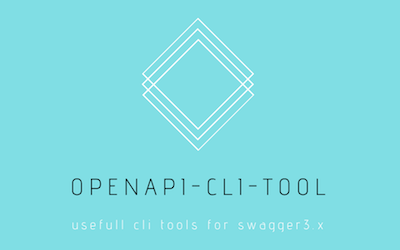

Ayaka Shimada
Software Engineer / DevOps Engineer
Japanese / English
PHP / Python / Linux
Living in Berlin, Germany
Personal Projects

openapi-cli-tool
OpenAPI (Swagger 3.x) CLI Tool. Supports multiple file extensions.

PKPicker
Simple and customizable iOS picker functions (List/Drum/Date/Clock) in Swift.

json-to-table
Chrome extension: convert json to html table.
Experience
Sep 2018 – Present
Software Engineer at FlixMobility Tech GmbH, Berlin, Germany / Product: Flixbus (API Platform)
- Developed APIs for mobile apps and integration partners, php symforny jenkins kubernetes kafka MySql CI/CD - API Gateway Platform, AWS terraform CDN kubernetes Kong premitheus grafana - Automation of API Documents and development guidelinde, Swagger 3.xCI/CD
- Developed APIs for mobile apps and integration partners, php symforny jenkins kubernetes kafka MySql CI/CD - API Gateway Platform, AWS terraform CDN kubernetes Kong premitheus grafana - Automation of API Documents and development guidelinde, Swagger 3.xCI/CD
Jun 2017 – Aug 2018
Software Engineer at Rakuten Inc, Tokyo, Japan / Industry: EC (Rakuten-ichiba)
- Renewal of Access-Analysis System for Merchants, python hive php React Laravel Oracle
- Renewal of Access-Analysis System for Merchants, python hive php React Laravel Oracle
Jan 2015 – May 2017
Backend Engineer/DevOps Engineer at ZENRIN DataCom Inc, Tokyo, Japan / Industry: Japanese map data
- Development of Access Log Warehouse Platform, AWS php hadoop hive PostgreSQL - Collection/Analysis of GPS Data, AWS python java php redis - DevOps CI/CD, AWS chef python fabric bash
- Development of Access Log Warehouse Platform, AWS php hadoop hive PostgreSQL - Collection/Analysis of GPS Data, AWS python java php redis - DevOps CI/CD, AWS chef python fabric bash
Oct 2013 – Dec 2014
Frontend Engineer at Dwango Inc, Tokyo, Japan / Product: niconico (iOS app)
- Frontend development of iPhone/iPad app, phpjavascript : Maintained webpages designed for iOS webviews. - Refactoring of backoffice system, phpYii frameworkMySqlmemcached
- Frontend development of iPhone/iPad app, phpjavascript : Maintained webpages designed for iOS webviews. - Refactoring of backoffice system, phpYii frameworkMySqlmemcached
Oct 2012 – Sep 2013
Bakend Engineer/Frontend Engineer at Bizwind Inc, Tokyo, Japan / Product: Point-Exchange Web Service
- Front/Backend development, phpjavascriptMySqlOracle : Maintained APIs for users to redeem points for rewards, as well as a dashboard for users to view their balance and transaction history.
- Front/Backend development, phpjavascriptMySqlOracle : Maintained APIs for users to redeem points for rewards, as well as a dashboard for users to view their balance and transaction history.